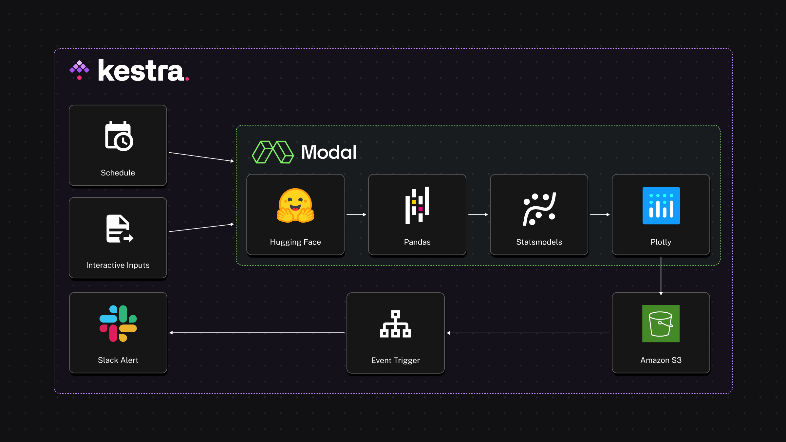
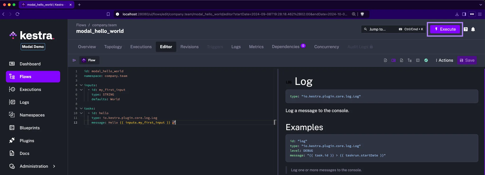
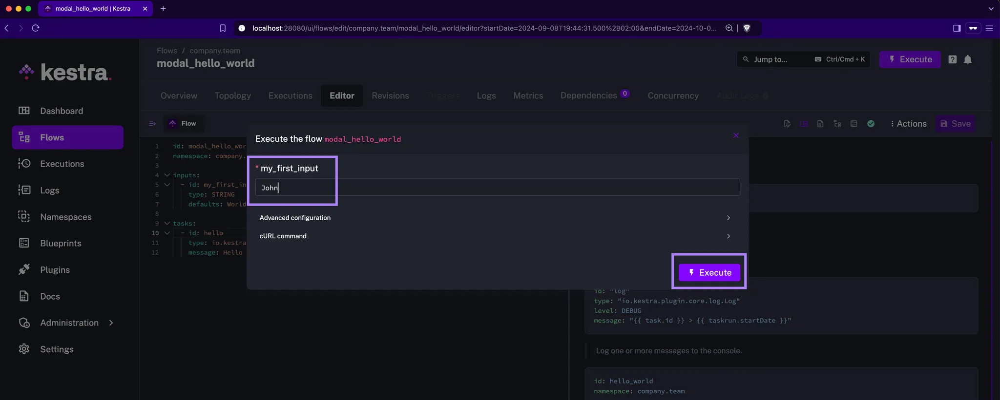
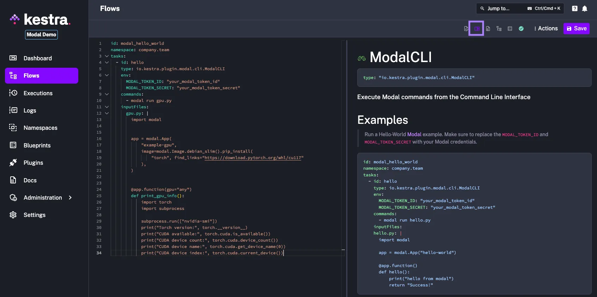
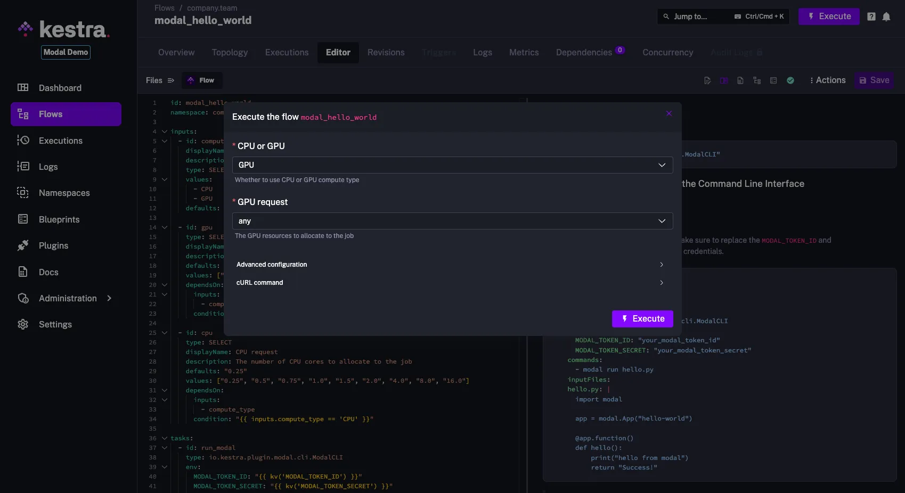
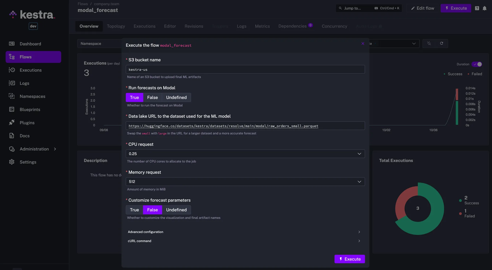

Build interactive workflows using Kestra and Modal
If you’ve ever needed to process a large dataset, you know how important it is to have sufficient compute resources at your disposal. Sometimes, you need more CPUs or a bigger disk, and other times, a GPU makes all the difference. Modal makes it effortless to provision compute resources on demand by defining the infrastructure requirements directly in your Python code.
With Kestra, you can easily configure and launch Modal functions directly from the UI, even when dealing with complex, dependent configurations. This allows you to adjust input parameters or resource allocations like GPU, CPU or memory dynamically at runtime, without needing to touch the underlying code.
In this post, we’ll create a forecasting workflow using Kestra and Modal:
- Kestra for workflow orchestration, handling interactive inputs, conditional logic, managing output artifacts, and scheduling — all from an intuitive UI.
- Modal for serverless compute and dependency management, allowing you to run your Python code without having to worry about building Docker images or managing cloud servers.
Our workflow will use data stored as Parquet files on Hugging Face to train a predictive model for customer orders. We’ll output the model’s predictions as a Plotly chart and optionally trigger an alert in Slack.

What are Kestra and Modal?
Kestra
Kestra is an open-source orchestration platform that lets you create workflows from an easy-to-use UI while keeping everything as code under the hood. You can automate scheduled and event-driven data pipelines, infrastructure builds, human-in-the-loop business processes, and internal applications written in any language. You can create those workflows from the UI using an embedded code editor that provides syntax validation, autocompletion, and built-in docs.
What makes Kestra stand out:
- Powerful UI: manage workflows across teams with varying levels of engineering expertise — low-code UI forms for business users and a full code editor for developers.
- Everything as Code: define any workflow in a simple YAML configuration and deploy it from anywhere using Terraform, CI/CD, CLI, API or the Kestra UI.
- Git integration: version control integration and revision history make it easy to track changes and roll back if needed.
- Highly customizable inputs: add strongly typed inputs that can conditionally depend on each other — Kestra shows or hides downstream inputs based on what the user has entered previously.
- Outputs & Artifacts: store and track workflow artifacts and pass data across multiple tasks and flows.
- Plugins: use one of over 500 integrations to avoid writing code from scratch for common tasks such as extracting data from popular source systems, executing SQL queries within a database, reacting to events from external message brokers or triggering external jobs or API calls.
Modal
Modal is a serverless platform that provides the compute resources needed for your Python apps without the pain of managing dependencies, containerization, or infrastructure. You can dynamically access GPUs or CPUs to run your code, and you only pay for what you use.
What makes Modal stand out:
- Serverless compute: spin up cloud resources instantly when you need them.
- Cost-effective: pay only for the time your resources are running, down to the second.
- Pythonic: add a few Python decorators to your code to offload compute to Modal — no need to maintain CI/CD pipelines, Kubernetes manifests, or Docker images.
- Dependency management: no need to worry about Dockerfiles or virtual environments — Modal handles all infrastructure-related processes as long as you define your dependencies directly in your Python code.
Now that you know a bit more about Kestra and Modal, let’s use them to build powerful interactive workflows.
Building a forecasting workflow with Kestra and Modal
In this example, we’ll build a time-series forecast to predict the order volume based on historical data. This is a timely use case just ahead of Black Friday and the holiday season! We’ll use a SARIMA model to forecast the number of orders expected over the next 180 days and visualize the results.
This workflow will be interactive, allowing users to adjust parameters such as the dataset URL, S3 bucket path, the number of CPU cores, and memory. The code that generates the forecast will run on Modal.
Here’s a short video showing the final result:
Run Modal from Kestra
Before diving into the full example, we first need to launch Kestra. Follow the Quickstart Guide to get Kestra up and running in 60 seconds and execute your first workflow.
“Hello World” in Kestra
Here’s a basic code scaffold to launch a “hello-world” flow in Kestra:
id: modal_hello_world
namespace: company.team
inputs:
- id: my_first_input
type: STRING
defaults: World
tasks:
- id: hello
type: io.kestra.plugin.core.log.Log
message: Hello {{ inputs.my_first_input }} 🚀Go to the UI and click on the Create button. Paste the above code and Save the flow.
Then, click the Execute button to launch the flow, and soon after you should see the output in the logs: Hello World 🚀.

Each workflow in Kestra consists of three required components:
- a unique
id - a
namespaceused for organization and governance - a list of
tasksthat define the workflow logic.
Optionally, you can also define inputs to allow users to dynamically execute the flow with different parameter values. Try that yourself by changing the value “World” to your name.

“Hello World” in Modal triggered from Kestra
Now, let’s add a Hello-World Modal example that we’ll trigger from Kestra. You can get your Modal token ID and secret by following the quickstart guide.
id: modal_hello_world
namespace: company.team
tasks:
- id: hello
type: io.kestra.plugin.modal.cli.ModalCLI
env:
MODAL_TOKEN_ID: "your_modal_token_id"
MODAL_TOKEN_SECRET: "your_modal_token_secret"
commands:
- modal run gpu.py
inputFiles:
gpu.py: |
import modal
app = modal.App(
"example-gpu",
image=modal.Image.debian_slim().pip_install(
"torch", find_links="https://download.pytorch.org/whl/cu117"
),
)
@app.function(gpu="any")
def print_gpu_info():
import torch
import subprocess
subprocess.run(["nvidia-smi"])
print("Torch version:", torch.__version__)
print("CUDA available:", torch.cuda.is_available())
print("CUDA device count:", torch.cuda.device_count())
print("CUDA device name:", torch.cuda.get_device_name(0))
print("CUDA device index:", torch.cuda.current_device())When you point the cursor anywhere in the Modal plugin configuration and switch to the documentation tab, you will see the explanation of all Modal plugin properties and examples how to use it.

Interactive Workflows
Let’s extend the previous code example by adding an input allowing to choose the compute type needed for the Modal task. The dependsOn property in the inputs section ensures that the GPU option is only shown if the user chooses to use GPU acceleration in the Modal function. When the GPU option is selected, the dropdown shows the list of available GPUs, allowing only valid values to be selected:
id: modal_hello_world
namespace: company.team
inputs:
- id: compute_type
displayName: CPU or GPU
description: Whether to use CPU or GPU compute type
type: SELECT
values:
- CPU
- GPU
defaults: CPU
- id: gpu
type: SELECT
displayName: GPU request
description: The GPU resources to allocate to the job
defaults: "any"
values: ["any", "t4", "l4", "a100", "h100", "a10g"]
dependsOn:
inputs:
- compute_type
condition: "{{ inputs.compute_type == 'GPU' }}"
- id: cpu
type: SELECT
displayName: CPU request
description: The number of CPU cores to allocate to the job
defaults: "0.25"
values: ["0.25", "0.5", "0.75", "1.0", "1.5", "2.0", "4.0", "8.0", "16.0"]
dependsOn:
inputs:
- compute_type
condition: "{{ inputs.compute_type == 'CPU' }}"
tasks:
- id: run_modal
type: io.kestra.plugin.modal.cli.ModalCLI
env:
MODAL_TOKEN_ID: "{{ kv('MODAL_TOKEN_ID') }}"
MODAL_TOKEN_SECRET: "{{ kv('MODAL_TOKEN_SECRET') }}"
GPU: "{{ inputs.gpu }}"
CPU: "{{ inputs.cpu }}"
commands:
- modal run cpu_or_gpu.py --compute-type "{{ inputs.compute_type }}"
inputFiles:
cpu_or_gpu.py: |
import os
import modal
app = modal.App(
"example-cpu-gpu",
secrets=[modal.Secret.from_local_environ(env_keys=["GPU", "CPU"])],
)
cpu_image = modal.Image.debian_slim().pip_install("torch", "psutil")
gpu_image = modal.Image.debian_slim().pip_install(
"torch", find_links="https://download.pytorch.org/whl/cu117"
)
@app.function(image=cpu_image, cpu=float(os.getenv("CPU", 0.25)))
def print_cpu_info():
import torch
import platform
import psutil
print("Torch version:", torch.__version__)
print("CUDA available:", torch.cuda.is_available()) # Should return False for CPU
print("CPU count:", psutil.cpu_count(logical=True))
print("CPU frequency:", psutil.cpu_freq().current, "MHz")
print("CPU architecture:", platform.architecture()[0])
print("Platform:", platform.system(), platform.release())
print("Total memory (RAM):", psutil.virtual_memory().total // (1024**2), "MB")
@app.function(image=gpu_image, gpu=os.getenv("GPU", "any"))
def print_gpu_info():
import torch
import subprocess
subprocess.run(["nvidia-smi"])
print("Torch version:", torch.__version__)
print("CUDA available:", torch.cuda.is_available())
print("CUDA device count:", torch.cuda.device_count())
print("CUDA device name:", torch.cuda.get_device_name(0))
print("CUDA device index:", torch.cuda.current_device())
@app.local_entrypoint()
def main(compute_type: str = "CPU"):
if compute_type == "GPU":
print_gpu_info.remote()
else:
print_cpu_info.remote()This example shows how to run Modal code as part of a Kestra workflow:
- Use the
commandsproperty in theModalCLIplugin to runmodalCLI commands (likemodal run cpu_or_gpu.py) - Use the
envproperty to provide the necessary environment variables for authenticating with Modal and external services or to pass variables to Modal function decorators - Set the
namespaceFiles.enabledproperty totrueif you want to store your Python code as a separate file in the built-in Code Editor rather than inline in YAML - Override the
containerImageproperty if you need to use a custom Modal version — the default is thelatestversion.

Adding Secrets
Now that we have the basic structure in place, let’s build out our order forecasting workflow.
To securely manage sensitive data such as Modal tokens or AWS credentials in Kestra, you can use Secrets. Adding secrets requires some additional setup, so to keep things simple for now, you can store them in the KV Store. Replace the placeholders with your actual credentials and execute the curl commands shown below (the double quotes are necessary). Alternatively, you can also add your KV pairs directly from the UI by navigating to the namespace company.team and adding the key-value pairs from the KV Store tab.
curl -X PUT -H "Content-Type: application/json" http://localhost:8080/api/v1/namespaces/company.team/kv/MODAL_TOKEN_ID -d '"your_credential"'
curl -X PUT -H "Content-Type: application/json" http://localhost:8080/api/v1/namespaces/company.team/kv/MODAL_TOKEN_SECRET -d '"your_credential"'
curl -X PUT -H "Content-Type: application/json" http://localhost:8080/api/v1/namespaces/company.team/kv/AWS_ACCESS_KEY_ID -d '"your_credential"'
curl -X PUT -H "Content-Type: application/json" http://localhost:8080/api/v1/namespaces/company.team/kv/AWS_SECRET_ACCESS_KEY -d '"your_credential"'
curl -X PUT -H "Content-Type: application/json" http://localhost:8080/api/v1/namespaces/company.team/kv/AWS_DEFAULT_REGION -d '"us-east-1"'Now you can reference those values in your flow using the {{ kv('KEY_NAME') }} syntax.
Adding data and a model
At this point, we’ve got the entire skeleton in place. From here, every workflow built with Modal and Kestra together will look different: different data, different models, different actions.
This GitHub Gist includes the full workflow definition for our time-series forecasting use case if you’d like to try it for yourself. Simply copy the Gist’s raw content and paste it in Kestra UI when creating a new flow.
We just want to call out one last feature. The dependsOn property in the inputs is what lets us create interactive workflows that adjust based on previous user inputs. When you click on the Execute button in the Kestra UI, you’ll see the available input options allowing you to adjust whether or not you want to customize the forecast, the amount of CPU, memory, and more. Depending on those choices, you will see other inputs appear or disappear.

Run the above flow and navigate to the Outputs tab of the Execution page. From here, you’ll be able to download and view the plotly report exported as an HTML file showing a forecasted order volume for each day of the forecast.
Automate Workflows with Triggers
You can extend the workflow by adding a trigger. This way, you can automatically run the flow:
- on a schedule
- event-driven e.g. when a file is uploaded to an S3 bucket
- from an external application via a webhook.
Check Kestra’s triggers documentation to learn more.
Next steps
Using Kestra and Modal together allows you to create interactive data workflows that adapt to user’s inputs and to your compute needs.
Kestra is open-source, so if you enjoy the project, give us a GitHub star ⭐️ and join our community to ask questions or share feedback.